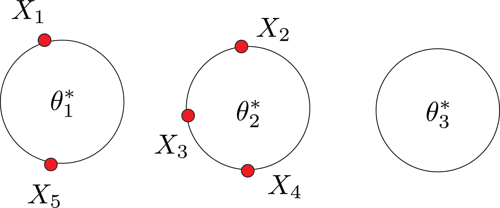

Gibbs Sampling
Review:
In the previous post, we talked about the Dirichlet process and Dirichlet process mixture, as the Dirichlet process is for CDF estimation and the Dirichlet process mixture is for density estimation (i.e., both are tools for estimation distributions).
Each sample from the Dirichlet process prior has a random collection of weights assigned to a random selection of data. Indeed, we wanted to make synthetic data, and the stick-breaking process was a valuable tool. In the stick-breaking process, we sampled the distribution function. Not any distribution function. It was a step function. We can approximate any smooth function via the step function, and the Dirichlet process prior is concentrated at the step function. We said that posterior is another Dirichlet process: $\text{DP}(\alpha+n , \hat{F_n})$ where $n$ is the number of data points we observed and:
$$ \hat{F_n} = \frac{n}{n+\alpha}F_n+\frac{\alpha}{n+\alpha}F_0 $$
We also talked about the effect of $\alpha$.
- Increasing $\alpha$ leads to having many pieces in the stick-breaking process, then the posterior will be concentrated on the prior distribution.
- Decreasing $\alpha$ leads to having fewer pieces in the stick-breaking process, then the posterior will likely be close to accurate distribution (i.e., possibly with high $n$, which means many steps).
However, we can only sometimes efficiently compute the posterior for the Dirichlet process mixture.

Gibbs sampling approximates our inference. Chinese restaurant problem is instrumental for Gibbs sampling to get to work. CRP helps us to parametrize the repeats of samples $X_1, X_2,..$:
$$ X_1,X_2,.., X_n | F \sim F $$
Let $n_j=|\{i:c_j=j\}|$ is the number of times $X_j^*$ appears. Then:
$$ X_n = \begin{cases} X_j^* & \text{with probability } \frac{n_j}{n+\alpha-1} \\ X\sim F_{0} & \text{with probability } \frac{\alpha}{n+\alpha-1} \end{cases} $$
Nonparametric Bayesian Mixture model
$$ \begin{aligned} F\sim DP(\alpha,F_0) \\ \theta_1,\theta_2,..\theta_n | F \sim F \\ X_i | \theta_i \sim f(x|\theta_i) ~ i=1,2,.. \end{aligned} $$
- $F$ is the distribution of parameters, not data.
- $X_i$ is a sample from the density function corresponding to parameter $\theta_i$
$$ \theta_{n+1} = \begin{cases} \theta_j^* & \text{with probability } \frac{n_j}{n+\alpha-1} \\ \theta\sim F_{0} & \text{with probability } \frac{\alpha}{n+\alpha-1} \end{cases} $$
Gibbs sampling
- Goal: To sample from posterior.
- We will use the CRP to approximate the DPM posterior.
- I have prior DP prior. I observed data: $X_1, X_2,.., X_5$.
- To draw samples from posterior: $\theta_1,\theta_2,..\theta_5$ and $\theta_0$ from $F_0$.
- Why? CRP helps us to predict the next point (e.g., $X_{n+1}$).
$$ f(x|\theta) = \frac{1}{5+\alpha}f(X|\theta_1) +..+ \frac{1}{5+\alpha}f(X|\theta_5) +\frac{\alpha}{5+\alpha}f(X|\theta_0) $$
problem? I am ignoring the repeats of the data. In general, with repeats. With repeats:
$$ f(x|\theta) = \sum_{\text{tables} j} \frac{n_j}{5+\alpha} f(x|\theta_j^*) + \frac{\alpha}{5+\alpha} f(x|\theta_0) $$
If $f$ are Gaussian with different means, $f(x|\theta) $ is the sum of Gaussians with different weights. Gibbs sampling will help us how to sample these $\theta$. In general, Gibbs sampler works as follows:
- I want sample from posterior $P(\theta_1,\theta_2,..,\theta_n| \text{Data})$
- Gibbs sampling will sample one dimension given all the others.
- Pick a random $j$
- Sample $\theta_j$ from $P(\theta_j| \text{Data}, \theta_{-j})$. It means freeze all $\theta$ except $\theta_j$.

In Gibbs sampling, there are two random elements. Which ones?
- $\theta$ or dishes
- clustering or which customer sits where
There is another version of CRP that only involves the second one: Collapsed Gibbs sampling.
Simple setup:
$$ f_x(\theta) \sim \text{Normal}(\theta,\sigma^2) $$
And base distribution:
$$ F_0 \sim \text{Normal}(\mu_0,\tau_o^2) $$
Posterior:
$$ \begin{aligned} P(\theta| X_1,..,X_n) \sim & \text{Normal}(\bar{\theta_n},\bar{\tau^2}_n) \\ \text{posterior mean: } \bar{\theta_n} = & w_n \bar{x_n} + (1-w_n)\mu_o \\ \text{posterior variance: } 1/\bar{\tau_n^2}= & 1/{\sigma^2_n} + 1/{\tau_0^2} \end{aligned} $$
You can show that as the sample size $n$ gets large, the bayesian inference and frequentist approaches will give the same results. In other words, posterior distribution becomes concentrated around the sample mean, the maximum likelihood estimator, and the variance goes to zero. Also, the predictive distribution:
$$ X_{n+1}|X_1,..X_n \sim \text{Normal}(\bar{\theta_n},\tau_n^2+\sigma^2) $$
Where $\sigma^2$ comes from the additional prediction.
Let’s remove the first customer and suppose the rest are in a restaurant:
What’s the chance customer $1$ is seated at table $1$? $$ \begin{aligned} P(X|\theta_1) \propto \frac{1}{4+\alpha} w_1 \\ w_1 =p(x_1|\theta_1^*)\\ P(X|\theta_2) \propto \frac{1}{4+\alpha} w_2 \\ w_2 =p(x_1|\theta_2^*)\\ P(X|\theta_3) \propto \frac{1}{4+\alpha} w_3 \\ w_3 =p(x_1|\theta_3^*)\\ \end{aligned} $$
these $w_1,w_2,w_3$ are like three sided dices. Maybe you will get table 2:
We have to resample two tables:
- The table that we removed $X_1$ from
- The table that we added $X_1$ to
If you repeat this process many times, you will end up with $\theta_1^*$, $\theta_2^*$, ..$\theta_n^*$.
We covered this post in the intermediate machine learning SDS 365/565, Yale University, John Lafferty, where I was TF.